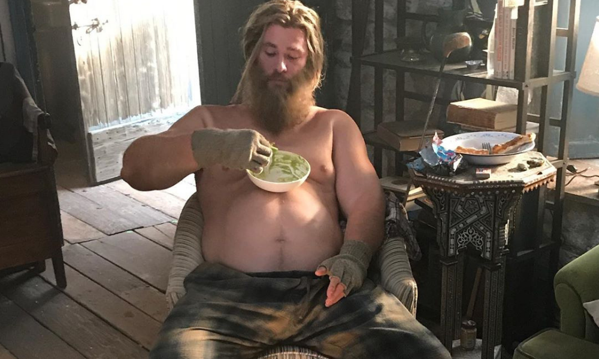

Thor Odinson es el Dios del Trueno, miembro fundador de los Vengadores. Por su conducta irresponsable fue despojado de su poder y desterrado en la Tierra por su padre, Odín. Mientras estaba exiliado, Thor aprendió sobre la humildad, encontró el amor en Jane Foster y ayudó a salvar a sus nuevos amigos del Destructor, quien fue enviado por su celoso hermano adoptivo, Loki. Como tal, Thor se remidió ante los ojos de su padre, se le concedió el acceso a su poder una vez más y regresó a Asgard para confrontar a Loki.
Thor fue recibido como un héroe en Asgard, pero se vio obligado a regresar a la Tierra para capturar a Loki , quien amenazaba con dominar dicho mundo. Thor se unió a los Vengadores bajo la dirección de S.H.I.E.L.D. y se comprometieron a detener a su hermano adoptivo. Tras participar en la Batalla de Nueva York, Loki fue derrotado por los Vengadores, y fue devuelto a Asgard por Thor para ser condenado por sus crímenes. Pese a su victoria en la Tierra, Thor pronto luchó contra los Elfos Oscuros en Asgard. Luego de vencerlos, Thor renunció a su derecho al trono y abandonó Asgard para quedarse con Foster en la Tierra.
Su hermana Hela, destruyó su martillo y lo desterro en Sakaar, donde compitió en la Contienda de Campeones. Después de una pelea en la arena con Hulk, Thor lo reclutó a él y Brunnhilde para formar a los Revengadores, escapar de Sakaar y salvar Asgard. Allí, Thor hizo que Loki desate el Ragnarök, resucitando a Surtur, destruyendo Asgard y matando a Hela en el proceso, aunque escapó con los Asgardianos restantes en la Statesman y decidió reubicar a los Asgardianos en la Tierra.
Sin embargo, la Statesman fue atacada por Thanos, quienes buscaban el Teseracto. Pese a que la mitad de los Asgardianos fueron evacuados, Thor presenció como Thanos se adueñó de la Gema del Espacio y asesinó a Loki antes de destruir la nave. Acto seguido, él se trasladó a Wakanda para ayudar a los Vengadores a derrotar a Thanos, quien sometió a los héroes y realizó el Chasquido, matando a la mitad de la vida en el universo. Con la ayuda de Rocket y Nebula, los Vengadores viajaron a Titán II, donde Thor decapitó a Thanos al descubrir que este destruyó las Gemas del Infinito. Él luego se trasladó a Nuevo Asgard, Noruega, donde los Asgardianos sobrevivientes comenzarían a vivir.En 2023, Banner y Rocket convencieron a Thor de reintegrarse con los Vengadores para viajar en el tiempo y reunir las Gemas del Infinito del pasado. Pero Thor ya no era el mismo, tuvo inconvenientes emocionales luego de darse cuenta que no podria revivir a las personas asesinadas por Thanos por lo que se dio a la bebida y a la comida y perdio su tan logrado fisico.
